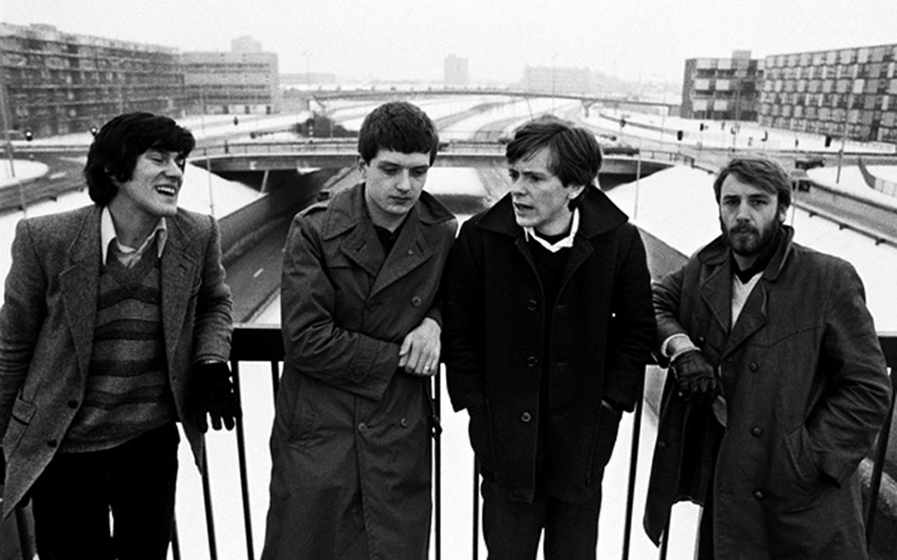
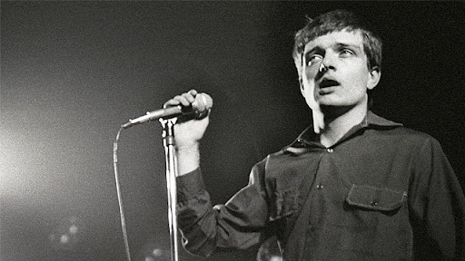
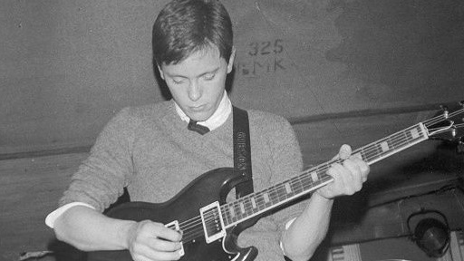
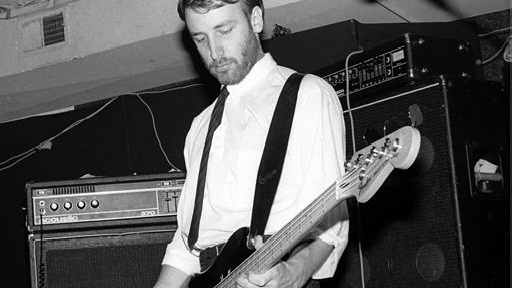
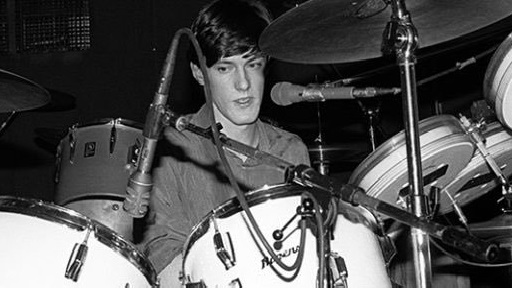
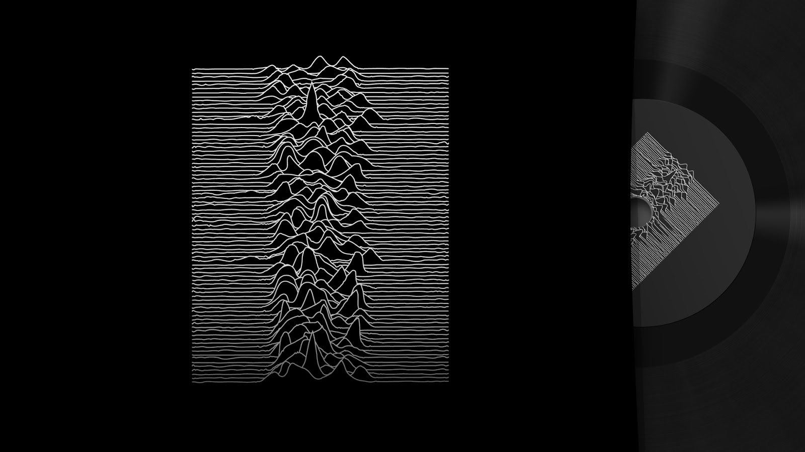
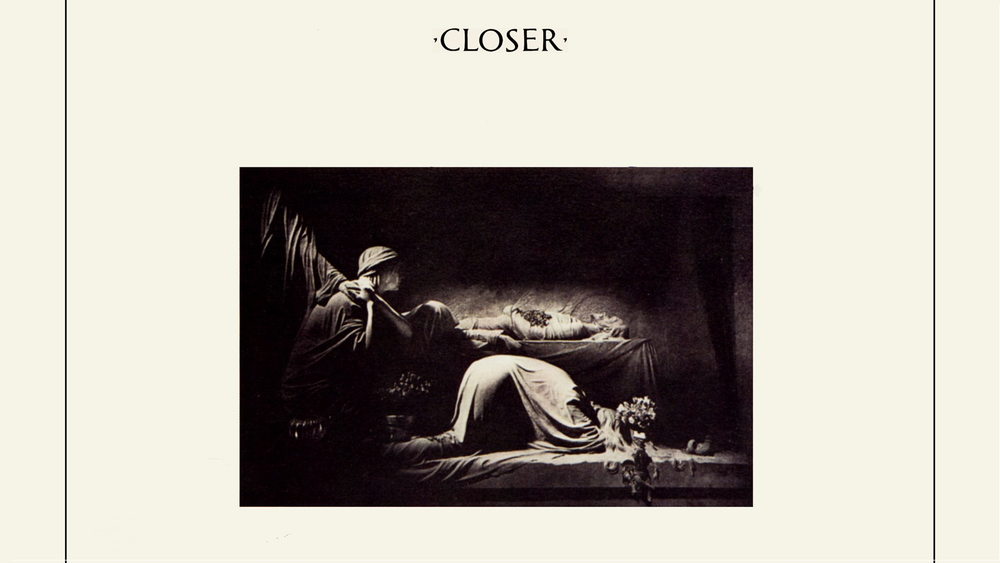

Quem Foi
Joy Division foi uma banda inglesa de rock, fundada em 1976, em Manchester, que se notabilizou como uma das pioneiras do pós-punk. A banda encerrou suas atividades em 18 de maio de 1980 após o suicídio do vocalista e guitarrista ocasional, Ian Curtis.
Integrantes

Ian Curtis
Foi o co-fundador e vocalista da banda Joy Division, sendo considerado um gênio do rock, por retratar de forma profunda as tristezas e conflitos internos que afligem a vida humana. Embora promissor, o cantor de origem britânica lutou a vida inteira contra uma profunda depressão.

Bernard Sumner
Cantor, compositor, guitarrIsta, tecladista e produtor musical britânico. Ele é mais conhecido como guitarrista e membro fundador de duas bandas altamente influentes, Joy Division e New Order. Ele gravou também com Johnny Marr na banda Electronic.

Peter Hook
Cantor, compositor, multi-instrumentista e produtor de discos inglês. Ele é mais conhecido como baixista e co-fundador das bandas de rock inglesas Joy Division e New Order. Hook costumava tocar melodias nas cordas altas com um efeito de coro pesado característico.

Stephen Morris
Músico e produtor inglês. Ele é mais conhecido pela sua passagem como baterista da banda Joy Division e posteriormente, tecladista e programador da banda New Order. Ele também tocou na banda Bad Lieutenant e na The Other Two, que formou com sua esposa, Gillian Gilbert.
DISCOGRAFIA

Unknown Pleasures
Unknown Pleasures é o álbum de estreia da banda pós-punk inglesa Joy Division. O álbum foi gravado em abril de 1979 no Strawberry Studios, em Stockport. Originalmente, não havia indicação dos lados do LP, além disso, os nomes das faixas estão escritos no encarte e não no selo.
- "Disorder"
- "Day of the Lords"
- "Candidate"
- "Insight"
- "New Dawn Fades"
- "She's Lost Control"
- "Shadowplay"
- "Wilderness"
- "Interzone"
- "I Remember Nothing"
Músicas:

Closer
Closer é o segundo e último álbum de estúdio da banda britânica de pós-punk Joy Division, lançado em 1980, sendo considerado um dos mais importantes álbuns do movimento pós-punk. As músicas foram gravadas sob uma abóbada de estuque especialmente construída, a fim da captar a ressonância de uma capela.
- "Atrocity Exhibition"
- "Isolation"
- "Passover"
- "Colony"
- "A Means To a End"
- "Heart and Soul"
- "Twenty Four Hours"
- "The Eternal"
- "Decades"